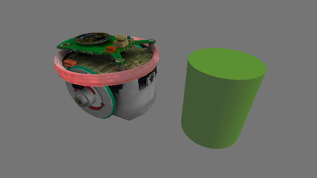
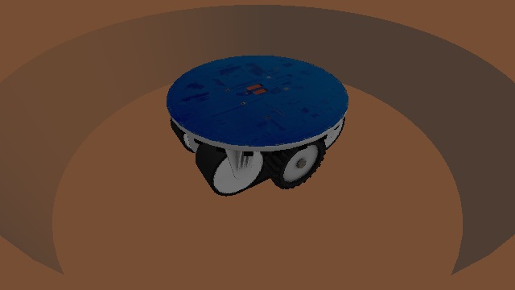
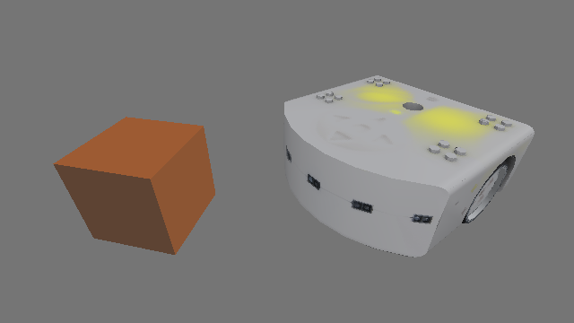
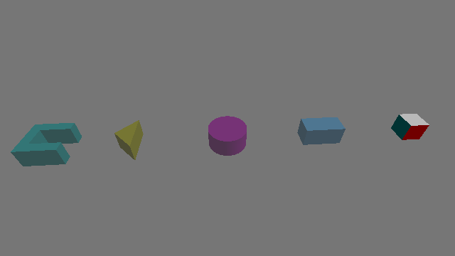

Examples#
Basic Examples#
These three examples show how to create a world, add robots and objects, read sensors and perform actions.
E-puck#
>>> import pyenki
>>> world = pyenki.World()
>>> epuck = pyenki.EPuck()
>>> world.add_object(epuck)
>>> epuck.position = (-10, 0)
>>> epuck.set_led_ring(True)
>>> world.add_object(pyenki.CircularObject(2.0, 5.0, -1, pyenki.Color(0.3, 0.7, 0)))
>>> world.step(0.1)
>>> epuck.prox_values
array([98.52232283, 3.30197324, ...
>>> epuck.camera_image
array([[0.5, 0.5, 0.5, 1. ] ...
{kind=link}

Marxbot#
>>> import pyenki
>>> # create a world surrounded by a cylindrical wall.
>>> world = pyenki.World(r=20.0, walls_color=pyenki.Color(0.8, 0.2, 0.1))
>>> marxbot = pyenki.Marxbot()
>>> world.add_object(marxbot)
>>> marxbot.position = (10.0, 0.0)
>>> marxbot.angle = 0.0
>>> # Spin the robot on itself
>>> marxbot.left_wheel_target_speed = 5.0
>>> marxbot.right_wheel_target_speed = -5.0
>>> # Read the omnidirectional rgb-d camera
>>> # Distances
>>> marxbot.scanner_distances
array([30. , 29.73731892, ...
>>> # Image
>>> marxbot.scanner_image
array([[0.8, 0.2, 0.1], ...
{kind=link}

Thymio#
>>> import pyenki
>>> world = pyenki.World()
>>> thymio = pyenki.Thymio2()
>>> world.add_object(thymio)
>>> thymio.position = (14.1, 7.2)
>>> thymio.angle = 4.0
>>> # Spin the robot on itself
>>> thymio.motor_left_target = 10.2
>>> thymio.motor_right_target = -10.2
>>> # Switch the top LED yellow
>>> thymio.set_led_top(0.5, 0.5, 0.0)
>>> world.add_object(pyenki.RectangularObject(5.0, 5.0, 5.0, -1, pyenki.Color(0.8, 0.3, 0)))
>>> world.step(0.1)
>>> thymio.prox_values
array([ 0. , 0., ...
{kind=link}

Objects#
import pyenki
world = pyenki.World()
c = pyenki.CompositeObject([([(0, 1), (0, 0.5), (2, 0.5), (2, 1)], 1.0),
([(0, -0.5), (0, -1), (2, -1), (2, -0.5)], 1.0),
([(0, 0.5), (0, -0.5), (0.5, -0.5),
(0.5, 0.5)], 1.0)],
-1,
color=pyenki.Color(0, 0.5, 0.5))
world.add_object(c)
triangle = pyenki.ConvexObject([(0.0, 0.0), (1.0, -1.0), (1.0, 1.0)],
1,
-1,
color=pyenki.Color(0.5, 0.5, 0.0))
triangle.position = (5, 0)
world.add_object(triangle)
cylinder = pyenki.CircularObject(1.0,
1.0,
-1,
color=pyenki.Color(0.5, 0.0, 0.5))
cylinder.position = (10, 0)
world.add_object(cylinder)
box = pyenki.RectangularObject(2.0,
1.0,
1.0,
-1,
color=pyenki.Color(0.2, 0.5, 0.7))
box.position = (15, 0)
world.add_object(box)
# at the moment textures are used to compute the sensors (cameras) response
# but are ignored when displaying the object
colorful_box_shape = [(0.0, 0.0), (1.0, 0.0), (1.0, 1.0), (0.0, 1.0)]
colorful_box_colors = [
pyenki.Color.red,
pyenki.Color(0.5, 0.5, 0.0), pyenki.Color.green,
pyenki.Color(0.0, 0.5, 0.5)
]
colorful_box = pyenki.ConvexObject(colorful_box_shape,
1,
-1,
side_color=colorful_box_colors)
colorful_box.position = (20, 0)
world.add_object(colorful_box)
{kind=link}

Hello Thymio#
In the most common case, you want to subclass one or more robots adding the appropriate controller.
Then, you setup up the world, adding as many objects as needed.
Finally, you may either run the simulation in real time inside a Qt application,
or write your own loop where to call World.step.
In this example, a Thymio will advance as long as there is not a obstacle (a wall) in front of it, when it will stop and switch the LED color to red from green.
import math
import sys
import pyenki
# We sublass `pyenki.Thymio2`. This way, the world update step will automatically call
# also the Thymio `controlStep`.
class ControlledThymio2(pyenki.Thymio2):
# This is the method we have to overwrite
def controlStep(self, dt: float) -> None:
# Check if there is an obstacle in front of us
value = self.prox_values[2]
if value > 3000:
# A lot of light is reflected => there is an obstacle,
# so we stop and switch the LED to red
speed = 0.0
self.set_led_top(red=1.0)
else:
speed = 10.0
self.set_led_top(green=1.0)
self.motor_left_target = speed
self.motor_right_target = speed
def setup() -> pyenki.World:
# We create an unbounded world
world = pyenki.World()
# We add a Thymio at the origin,
# which can optionally use Aseba-like units and types.
thymio = ControlledThymio2()
thymio.position = (0, 0)
thymio.angle = 0
world.add_object(thymio)
# and a wall a bit in forward, in front of the Thymio.
wall = pyenki.RectangularObject(l1=10,
l2=50,
height=5,
mass=1,
color=pyenki.Color(0.5, 0.3, 0.3))
wall.position = (30, 0)
world.add_object(wall)
return world
def run(world: pyenki.World,
gui: bool = False,
T: float = 10,
dt: float = 0.1,
orthographic: bool = False) -> None:
if gui:
# We can either run a simulation [in real-time] inside a Qt application
world.run_in_viewer(camera_position=(0, 0),
camera_altitude=70.0,
camera_yaw=0.0,
camera_pitch=-math.pi / 2,
walls_height=10,
camera_is_ortho=orthographic)
else:
# or we can write our own loop that run the simulaion as fast as possible.
steps = int(T // dt)
for _ in range(steps):
world.step(dt)
if __name__ == '__main__':
world = setup()
run(world,
gui='--gui' in sys.argv,
orthographic='--orthographic' in sys.argv)
Proximity Communication#
In this example, two Thymios placed in front of each other, transmit messages using proximity communication. After each control step, we print the received messages.
import math
import pyenki
# Create a world and place two thymios in front of themselves
world = pyenki.World()
thymio1 = pyenki.Thymio2()
thymio1.position = (0, 0)
world.add_object(thymio1)
thymio2 = pyenki.Thymio2()
thymio2.position = (30, 0)
thymio2.angle = math.pi
world.add_object(thymio2)
# Enable the communication and let them send different payloads
thymio1.prox_comm_enabled = True
thymio2.prox_comm_enabled = True
thymio1.prox_comm_tx = 111
thymio2.prox_comm_tx = 222
for _ in range(100):
world.step(0.1)
# Check which messages they are receiving
print('thymio1:')
print('\t\n'.join(f'Got message {e.rx_value} [{e.payloads} {e.intensities}]'
for e in thymio1.prox_comm_events))
print('thymio2:')
print('\t\n'.join(f'Got message {e.rx_value} [{e.payloads} {e.intensities}]'
for e in thymio2.prox_comm_events))
Interactive GUI#
The Qt widget that displays the world can be run: - in a script, using a blocking loop, like in Hello Thymio - in a interactive session that does not block and allows to visualize the world while manipulating it.
It can be used without PyQt, like in
import pyenki
world = pyenki.World(radius=100)
epuck = pyenki.EPuck(camera=False)
epuck.left_wheel_target_speed = 10.0
epuck.set_led_ring(True)
world.add_object(epuck)
# setup Qt: needs to be called before creating the first view
pyenki.init_ui()
viewer = pyenki.WorldView(world)
viewer.reset_camera()
viewer.show()
viewer.start_updating_world(0.1)
# executes the Qt runloop for a while
pyenki.run_ui(duration=10)
and with PyQt, like in
import pyenki
from PyQt6.QtCore import QCoreApplication, Qt
from PyQt6.QtWidgets import QApplication, QHBoxLayout, QWidget
# replaces pyenki.init_ui(): needs to be called before creating any widget
QCoreApplication.setAttribute(Qt.ApplicationAttribute.AA_ShareOpenGLContexts),
app = QApplication([])
world = pyenki.World(radius=100)
epuck = pyenki.EPuck(camera=False)
epuck.left_wheel_target_speed = 10.0
epuck.set_led_ring(True)
world.add_object(epuck)
viewer_1 = pyenki.WorldView(world,
camera_position=(-20, -20),
camera_altitude=20)
viewer_1.point_camera(target_position=(0, 0), target_altitude=5)
viewer_2 = pyenki.WorldView(world,
helpers=False,
camera_altitude=30,
camera_is_ortho=True)
viewer_2.camera_is_ortho = True
window = QWidget()
hbox = QHBoxLayout(window)
window.resize(960, 320)
hbox.addWidget(viewer_1.widget)
hbox.addWidget(viewer_2.widget)
window.show()
viewer_1.start_updating_world(0.1)
app.exec()
We also support an interactive visualization inside jupyter notebooks via jupyter_rfb:
import pyenki
world = pyenki.World()
thymio = pyenki.Thymio2()
thymio.left_wheel_target_speed = 10
world.add_object(thymio)
from pyenki.buffer import EnkiRemoteFrameBuffer
w = EnkiRemoteFrameBuffer(world=world)
w
await w.run_async(time_step=0.1, duration=5)
Video#
To generate a video from a simulation, we can run:
import pyenki
from video import make_video
world = pyenki.World()
thymio = pyenki.Thymio2()
thymio.left_wheel_target_speed = 10
thymio.right_wheel_target_speed = -6
thymio.set_led_circle(-1, 1.0)
thymio.set_led_buttons(0, 1.0)
thymio.set_led_buttons(2, 1.0)
thymio.set_led_top(1.0, 0.0, 0.3)
world.add_object(thymio)
v = make_video(world,
time_step=0.033,
duration=20,
camera_position=(0, -20),
camera_altitude=20,
camera_pitch=-0.7)
v.write_videofile('video.mp4', fps=30)